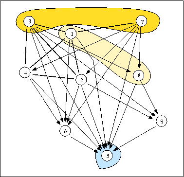

[0-1]-valued robustness index
Best unique choice problematics
The example concerns a triage machine selection problem for a postal parcels sorting center in Paris, thoroughly discussed in Roy and Bouyssou (1993).
A = {1,2,3,4,5,6,7,8,9}, L = [0,1] (rational 0-1 interval)
| S | 1 | 2 | 3 | 4 | 5 | 6 | 7 | 8 | 9 |
|---|---|---|---|---|---|---|---|---|---|
| 1 | - | 0.72 | 0.67 | 0.79 | 0.92 | 0.74 | 0.69 | 0.25 | 0.05 |
| 2 | 0.69 | - | 0.97 | 0.72 | 0.92 | 0.64 | 0.00 | 0.27 | 0.67 |
| 3 | 0.62 | 0.92 | - | 0.85 | 0.92 | 0.77 | 0.21 | 0.79 | 0.59 |
| 4 | 0.69 | 0.85 | 0.79 | - | 1.00 | 0.72 | 0.24 | 0.08 | 0.04 |
| 5 | 0.00 | 0.00 | 0.00 | 0.00 | - | 0.00 | 0.00 | 0.00 | 0.00 |
| 6 | 0.00 | 0.00 | 0.00 | 0.00 | 0.95 | - | 0.42 | 0.00 | 0.00 |
| 7 | 0.77 | 0.57 | 0.30 | 0.59 | 0.87 | 0.92 | - | 0.79 | 0.09 |
| 8 | 0.45 | 0.21 | 0.16 | 0.21 | 0.67 | 0.27 | 0.27 | - | 0.64 |
| 9 | 0.12 | 0.18 | 0.06 | 0.17 | 0.74 | 0.00 | 0.00 | 0.48 | - |
The valued outranking graph admits two dominant kernels: {3, 7} and {1, 8} and one absorbent kernel: {5}.

Both dominant kernels are super strict and we may have a look at their L-qualifications in order to select one of them.
| Choice | 1 | 2 | 3 | 4 | 5 | 6 | 7 | 8 | 9 | Irred. | Ind. | Dom. | Abs. |
|---|---|---|---|---|---|---|---|---|---|---|---|---|---|
| {3, 7} | 0.24 | 0.30 | 0.70 | 0.30 | 0.24 | 0.24 | 0.76 | 0.24 | 0.41 | 0.70 | 0.70 | 0.59 | 0.00 |
| {1, 8} | 0.55 | 0.45 | 0.45 | 0.45 | 0.45 | 0.45 | 0.45 | 0.55 | 0.45 | 0.75 | 0.55 | 0.64 | 0.00 |
| {5} | 0.08 | 0.08 | 0.08 | 0.00 | 1.00 | 0.05 | 0.13 | 0.33 | 0.26 | 1.00 | 1.00 | 0.00 | 0.67 |
When compard with {1,8}, the first choice {3, 7} easily appears as unique most credible best choice recommendation. Whereas {5} definitely appears to be a credible worst choice.